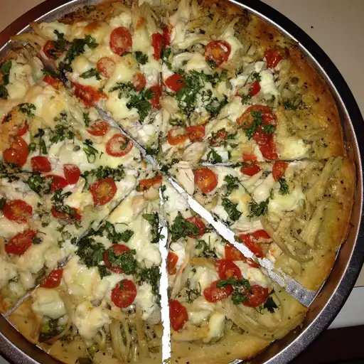

Garlic chicken pizza

Description
This garlic chicken pizza is a delicious homemade meal!
Butter garlic sauce, chicken, tomato, ricotta, and Parmesan are baked together for a delightfully light-tasting dish.
Ingredients
- 1 skinless, boneless chicken breast half
- 2 tablespoons butter or margarine, softened
- 2 cloves garlic, minced
- 2 tablespoons chopped green onion
- ½ teaspoon dried basil
- 1 (10 ounce) can refrigerated pizza crust dough
- 2 roma (plum) tomatoes, diced
- ½ cup chopped fresh cilantro
- ½ cup ricotta cheese
- ¼ cup grated Parmesan cheese
Steps
- Place chicken breast in a saucepan with enough water to cover. Bring to a boil, and cook until no longer pink, about 20 minutes.
Drain and cool slightly, then cut into strips.
- Meanwhile, in a small skillet over medium heat, melt butter with garlic, onion, and basil. Pour into a chilled dish to cool, and refrigerate until set.
- Preheat the oven to 350 degrees F (175 degrees C).
- Roll out pizza dough, place onto a pizza pan or other baking sheet, and spread herb butter over surface using the back of a spoon.
Arrange chicken on top, then dot with ricotta cheese.
Top with tomato slices, cilantro, and Parmesan cheese.
- Bake for 15 to 20 minutes in the preheated oven, until crust is browned and the center is cooked through.